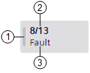
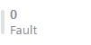
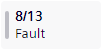
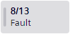
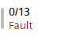

Event Lamps
The events that occur in the Flex Client application are grouped into categories, which are color-coded by severity.
Each category typically corresponds to an event lamp that displays in the Summary bar.
The number of lamps and their corresponding categories depends on the event schema and profile.
Each event lamp shows the total number of events for that category, and how many of those are unprocessed (not yet acknowledged by the operator).
An event lamp will also flash if there are any unprocessed events in its category.

1 | Category color | A vertical bar and the background show the color of the event category. |
2 | Event counter | Shows the total number of events for that category present in Event List (second number) and how many of those are unprocessed (first number). |
3 | Category name | Descriptive name of the event category. |
Event Lamp Display | ||
|---|---|---|
Graphical Display | Background Color and Behavior | Status |

| Solid white | No events for that category. |
 
| Flashes from light to dark category color. | New events for that category have occurred in the system and are still unprocessed. |

| Solid white | There are no unprocessed events for that category. |